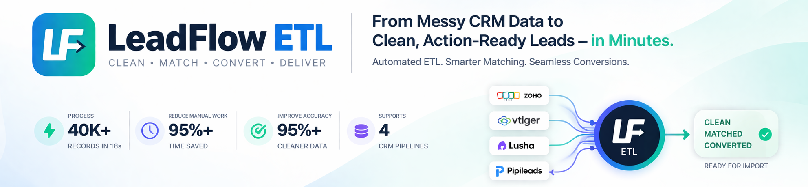

LeadFlow ETL
Automated CRM data transformation across multi-source exports, turning messy CSV files into clean import-ready records.
- 4-8 hours reduced to under 2 minutes
- Source-aware ETL for Zoho, Vtiger, Lusha, and Pipileads
- 95%+ cleaner, more reliable CRM imports